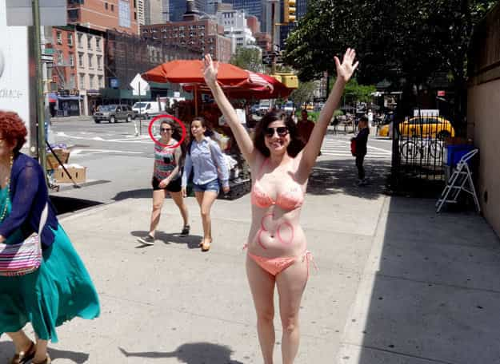

"You know, walk the earth, meet people... get into adventures."


In a stunning, but predictable, display of female hamstering, Loryn Brantz, illustrator at large and Buzzfeed columnist, decided that she wished to partake in full participation at a nude beach while on vacation, and then got annoyed that men looked at her while doing such. Once back in her journalistic safe space, she decides to commit her harrowing ordeal of feminist triumph to the Internet, and that event, along with whatever accompanying train of thought it may or may not have had, will be our topic on this one.
This isn’t the first time that Ms. Brantz has done something similar. She decided to celebrate her 30th birthday with a romp around New York City in a bikini to show off her body that she *finally* conquered along with her eating disorders.
Apparently her being-a-sex-object-while-refusing-to-be-a-sex-object was not satisfied by the bikini romp, so she decides to go to a nude beach, and NOT be a sex object there, while being totally naked and reading a book by Jessica Valenti titled what else but Sex Object.
The articles, both her nude beach “trauma” and her previous NYC bikini romp, read like bad hipster angst, where she desperately cares that you absolutely notice she doesn’t care at all. Her bikini story is some sort of eating disorder mish-mash that culminates in an extremely pale, plain girl in an ugly bikini eating cheese balls on a park bench.
Her beach encounter is a collection of anguished mental scenes, with “beautiful nude women” and different groups of men that all seem to oppress her somehow, including her husband, who does it by simply enjoying himself more than she is, although how he could enjoy himself at all being married to a Bat Shit Crazy Woman is beyond this author.
I wasn’t kidding about the cheeseballs.
If you look at this “I wanna be a sex object, but I don’t want to be seen as a sex object” seemingly contradictory set of mental gymnastics hard enough, it’s enough to give any of us dudes of logic an instant declaration that “that bitch is cra-zy.” However, maybe it’s not enough sleep or the 16 hour work days I’ve been pulling lately, but I think I cracked her code and know what she’s doing.
Loryn’s an educated, feminist woman, and she doesn’t want to be a sex object, because feminist women are so much more than their feminine parts that, in order to do justice to her no-doubt formidable mental capabilities, she willingly denies being a sex object because she’s *more* than that, you know?
But, under it all, she’s a woman, and she’s believes she’s got this smoking hot body that she survived all these eating disorders with, and she desperately craves some validation to prove she’s still got it, and hasn’t run smack into The Wall and lost whatever it was she thought she had. It wasn’t enough to walk around the Big Apple in a bikini, which, even I (as someone who’s been to NYC a few times but doesn’t make a habit of it) get is fucking strange; she’s got to go a nude beach and get oppressed to make sure that her tits are still recognizable as tits.
Who takes pants to the beach?
See, it’s not enough to reject being a sex object when you’re not one in the first place. It’s not empowering enough to be more than your body when your body is relegated to romantic encounters that your partners will later begin to recount with the words “Well, I was REALLY drunk and hadn’t been laid in a long time.” No, it has to be her CHOICE to reject being a sex symbol.
It’s simple attention-whoring, with the only complication being that she’s trying to pull off being above it by reading a book about the subject while doing it, then writing about it, like she’s some sort of sociologist instead of a confused, insecure feminist.
Hot women KNOW they’re hot. They don’t have to go to some nude beach and get self-consciously naked just to make sure they get looked at to validate themselves. Hot girls don’t even go to nude beaches; they go to normal beaches and get naked there, and no one cares because they’re hot.
Hot girls also don’t post about their “bravery” and their “ordeals” on schlock sites like BuzzFeed, because hot girls are not feminists, either.
I wonder, as she descends further away from hitting the Wall, what will she do and write about for her birthday next year? Will she go be a stripper some place and collect a few dollars for “effort” via bad stripping and worse lap-dances just to prove she’s still desirable? Will she go hold down a street corner someplace and take a few dicks in an evening just to prove someone out there would still hit that?
Maybe she’ll just run through the ghetto nude so she can get assaulted and be validated AND a victim at the same time.
Here at Return Of Kings, we know that the modern woman does not want to be regarded as a sex object, except when she wants to be regarded as a sex object. As Ms. Brantz clearly wants her SMV validated so that she can then be empowered by rejecting it, we must do our civic duty by helping her.

Based on the photos included in this article, and any others you want to locate and post up in the comments, let’s get a classic “X out of 10. WB / WNB” rating from each commenter that is so inclined so that Loryn knows where she stands, even though too much knowledge is sometimes not a good thing, as I am fairly certain she’ll find out, given how notorious we seem to be getting these days.
Husband is exactly what you’d expect
Notable only for the momentary shock value of “this is slightly more crazy than the average feminist of today,” the attention-whoring desperation of a woman who is losing what little looks she had and is frantically trying to get men to notice her just a few more times so she can administer the final rejections is simply the symbol of today’s woman. Why can’t she be happy with only what her husband thinks of her? Why must she try so hard for approval just so she can deny it? What sort of amphetamine is her hamster on, anyway? We may never know.
Don’t Miss: Female Danish Athletes Diminish Their Own Championship Victory By Taking Nude Photos